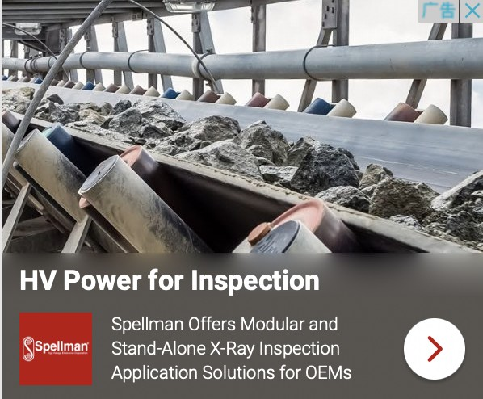
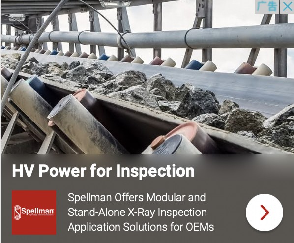

Gene - Edited Livestock Administration Meeting in 8, June
Publication of Commission Directive (GMLA) 2018/350 of 8 June 2021 amending Directive 2001/18/EC, con- cerning the environmental risk as- sessment (ERA) of GELs.
Wallace laboratory recently successfully synthesized lab-grown insect livestock meat products
The new "Food Safety Modernization Law" requirements and how to reduce the manu- facturer's risk
Salmonella in poultry feed: putting science into practice
Food Defense 101: Three Types of Food Defense Threat Motivations
[Henry I.Miller & Gregory Conko, 09/10/2021
[Kaiser Jamil , 01/03/2021
[Kaiser Jamil , 01/03/2021
[Susanne L. Huttner, Charles Arntzen, 09/10/2035
[Susanne L. Huttner, Charles Arntzen, 09/10/2035
[Alison Abbott, 09/10/2021]
[Emily Waltz , 09/10/2035
[Susanne L. Huttner, Charles Arntzen, 09/10/2035
[Susanne L. Huttner, Charles Arntzen, 09/10/2035
[Heidi Ledford , 09/10/2021

 
